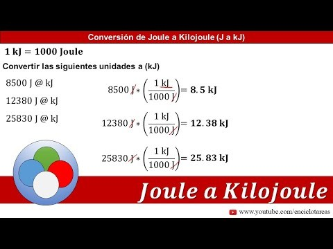

¿Qué significa la abreviatura kJ?
Kilojulios, que se expresan en kilojulios por kilogramo y cuya abreviatura es kJ/kg.
¿Qué unidad de medida es KJ?
Una kilocaloría es una unidad de energía térmica donde 1 kilocaloría equivale a 4,1868 kilojulio (KJ), y, asimismo, a 1000 calorías (cal). ... También se mide con kilocalorías (kcal) la cantidad de energía que aportan los alimentos y la cantidad de energía quemada mediante esfuerzo físico.
¿Cómo se miden los kilojulios?
Unidad de energía que se utiliza para definir el aporte calórico de un alimento. Un julio (J) equivale exactamente a 0,239 calorías (cal), mientras que un kilojulio (Kj) es exactamente 0,239 kilocalorías (Kcal).
